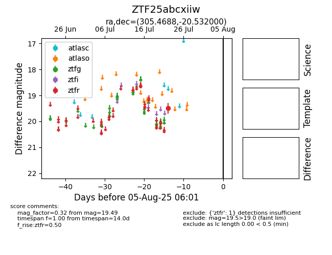

Target ZTF25abcxiiw at 2025-08-06 17:45, see:
FINK: fink-portal.org/ZTF25abcxiiw
Lasair: lasair-ztf.lsst.ac.uk/objects/ZTF25abcxiiw
ALeRCE: alerce.online/object/ZTF25abcxiiw
alt names
ZTF25abcxiiw (ztf,fink)
coordinates:
equatorial (ra, dec) = (305.4688,-20.53200)
galactic (l, b) = (23.2185,-28.70788)
photometry
last ztfr=19.49
1 ztfr detections
